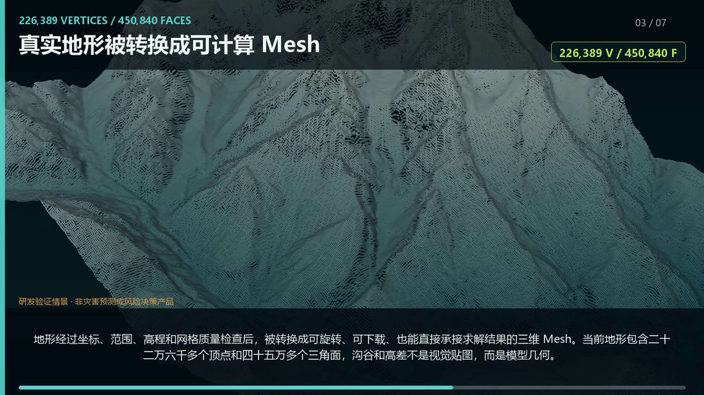
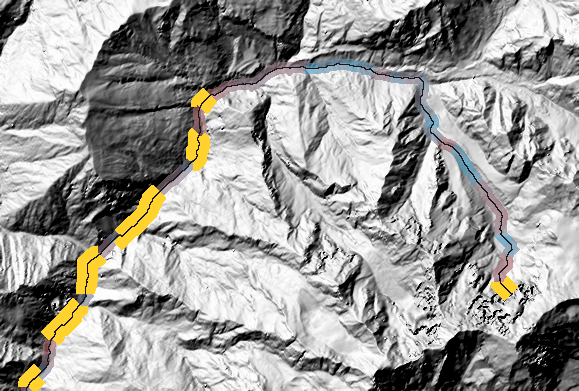
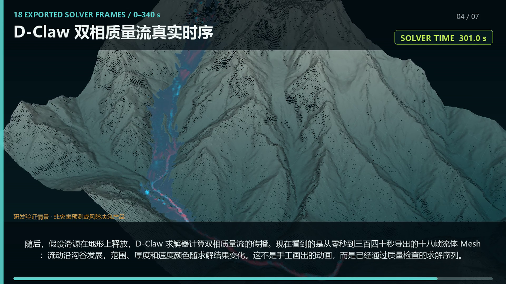
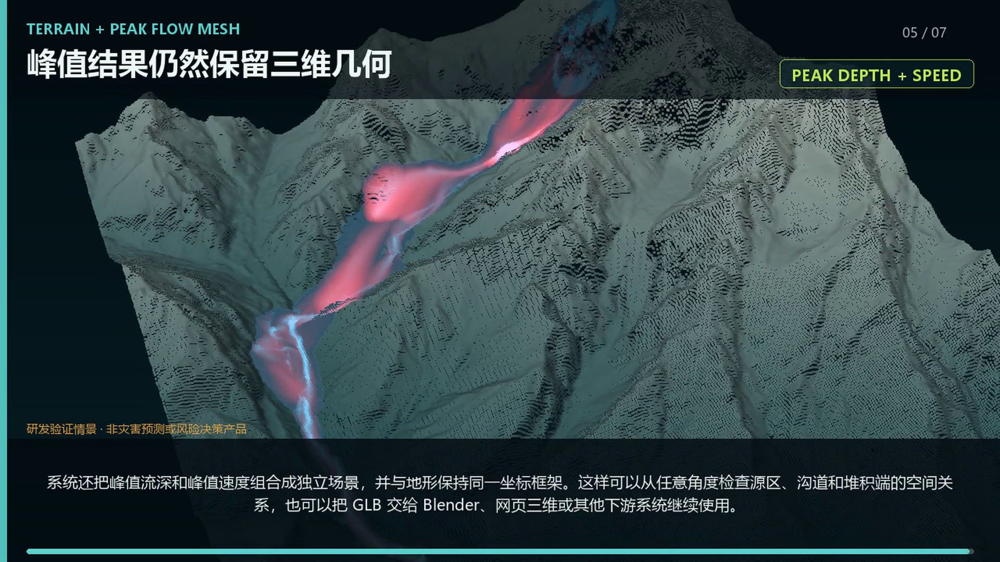
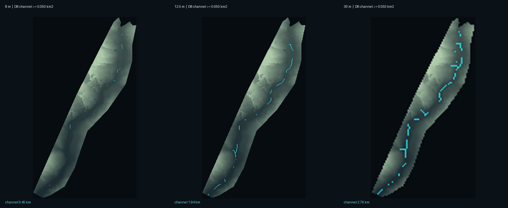
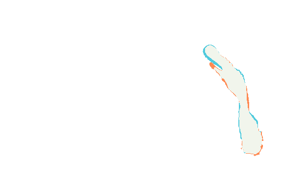
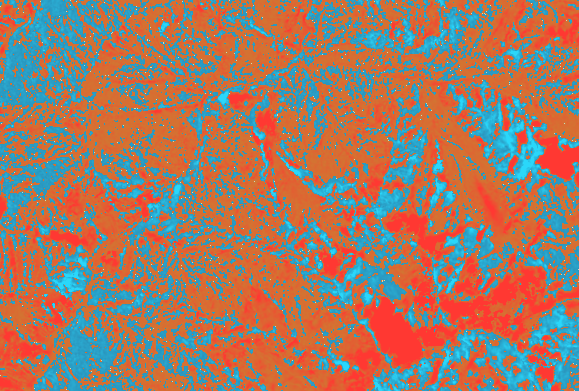
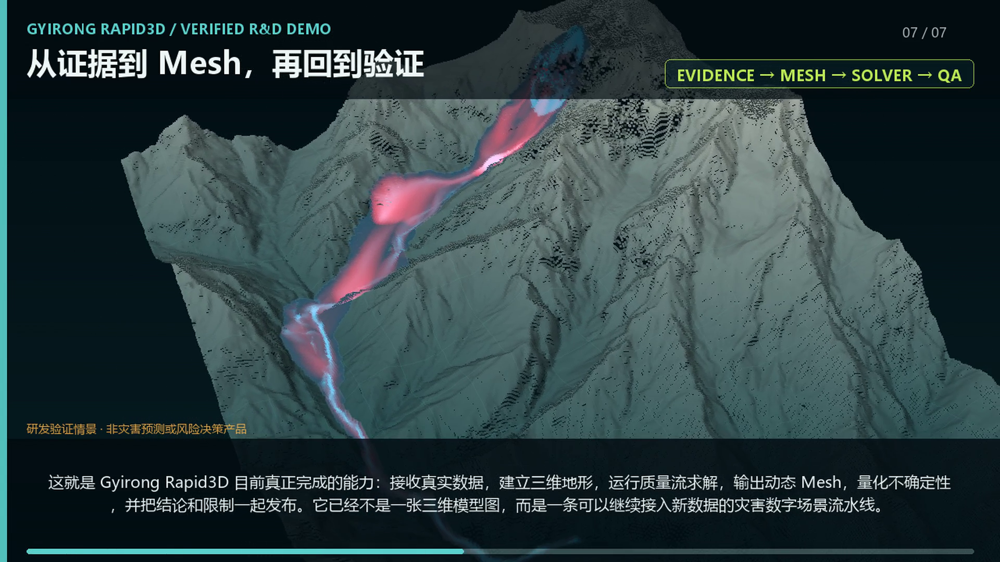
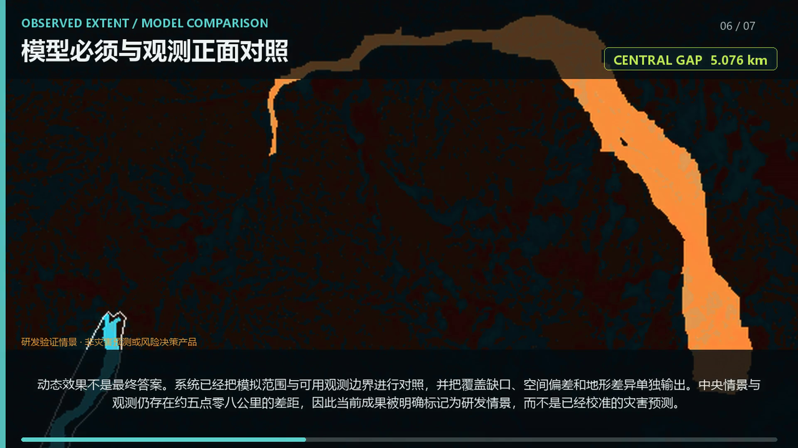

事件证据
来源、时间、许可证、观测范围与可信角色。
每一层都必须回答三个问题：数据从哪里来、在什么坐标和时间下有效、它能支持什么结论。系统把数据、模型、结果和限制同时交付。
来源、时间、许可证、观测范围与可信角色。
投影、高程基准、覆盖率、独立性与质量检查。
从地形栅格生成可计算、可复用的标准 GLB。
D-Claw 双相质量流和守恒、边界、状态 QA。
时序 Mesh、峰值流深、速度和统一局部坐标。
runout、IoU、召回率、空间缺口和失败归因。
哈希、依赖、声明闸门和明确的不可用边界。
公开演示版由非地理配准的研发截图组成，不包含原始影像、可下载真实事件 Mesh 或精确控制点。视频中的流动来自已导出的求解器时序。
以下画面都来自已经完成的运行和实验。没有把规划中的能力写成现有成果，也没有把外部模型输出当成真实观测。

坐标、高程基准和拓扑经过检查后，输出可在 Web 3D 与 Blender 使用的标准几何。

不是报告一个全域 RMSE，而是定位哪些河段的坡度、曲率和汇流表达最值得重新获取。

中央敏感性情景输出 18 帧、0–340 秒的真实求解序列，并保留质量与边界检查。

峰值流深与峰值速度可以与地形一起检查，也可以作为标准资产交给下游三维系统。

同一区域、同一阈值下比较沟道表达，让“高分辨率是否真正改变数值结果”成为可检验问题。

将纯网格细化、地形细节和组合效应拆开，避免把所有变化都归因于分辨率。

不同地形产品的结构化差异可视化，同时保持“表面证据”与“求解地形”的使用闸门。

证据、Mesh、求解、验证和声明限制形成同一条可审计关系链。
动态画面不是最终答案。模型必须与独立观测正面对照。当前结果没有到达现有下游观测对象，因此只能作为敏感性研究，不能称为校准预测。

这些分数是内部证据成熟度，用来表达“哪些层已经有真实数据支撑、哪些层仍依赖假设”。它们不是测绘精度、灾害发生概率或安全等级。
公开页面展示研发能力，不开放真实事件数据资产，也不改变任何上游数据许可证。所有真实世界安全决策必须依赖主管部门和独立验证。
这个公开仓库展示已经完成的技术链路、视觉结果和真实性边界。原始事件数据、精确控制点与真实 Mesh 资产不在公开范围内。